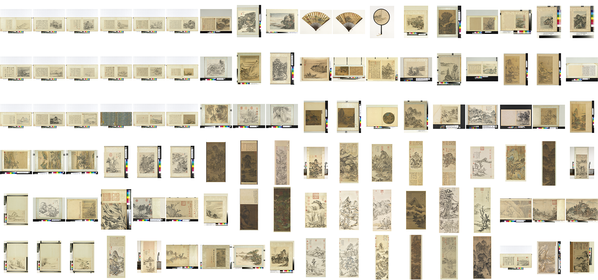
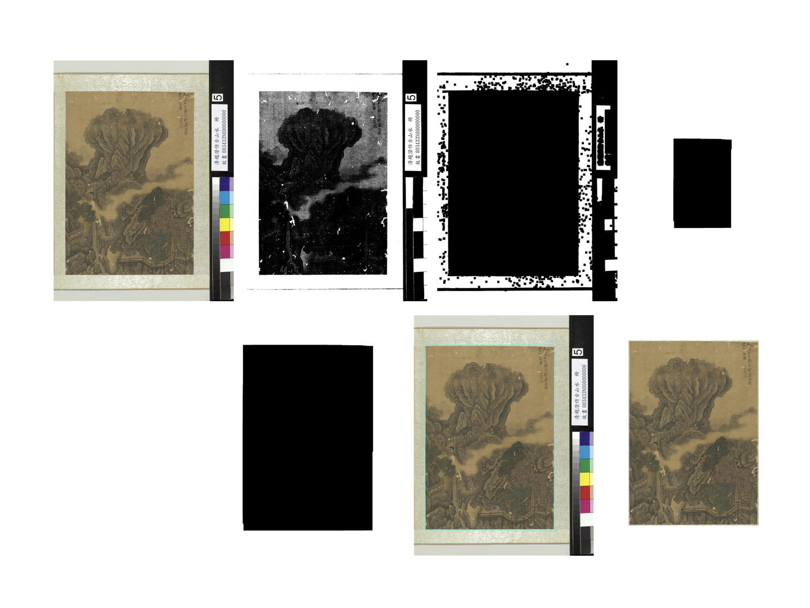
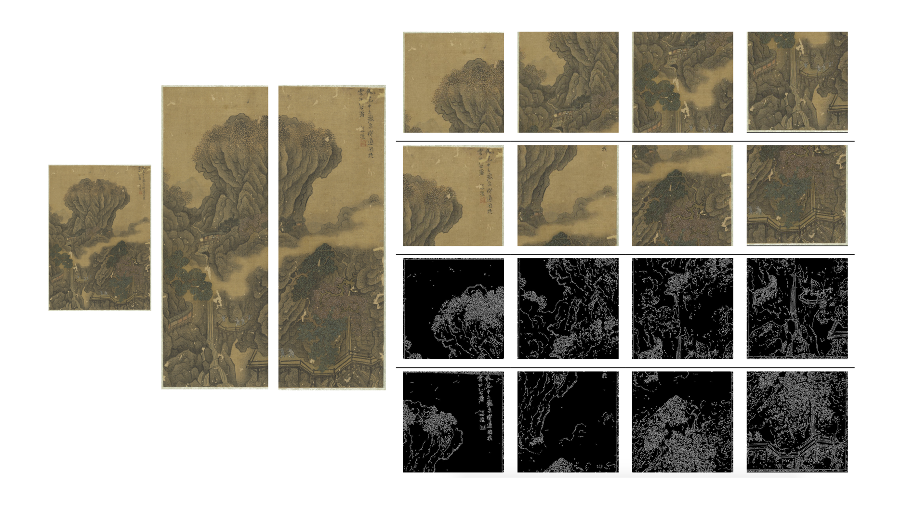

DaDA: Design and Draw with AI
September 2018

"DaDA" is an interactive project explores the possible role of artificial intelligence in (traditionally human oriented) creative processes -- such as drawing and design. A cooperative relation between human and AI in this interactive progress is expected. Human creator not only trains AI with artificial data but also benefits from the assistance of AI. On the other side, artificial intelligence not only learns from human created data but also "teaches" and provides human creator new approaches to expected or unexpected creative goals.
Introduction
DaDA: Design and Draw with AI, is an interactive installation based on artificial intelligence. When participants scribble lines, the AI will help to create a nature painting or Chinese Shanshui painting; If the participants doodle some colored blocks, the AI will assist to generate design, such as architecture, urban design , etc. After the AI has assisted human in drawing or designing, the artwork created by human (and AI) can also be feed back to train the AI system and explore more.
As the first attempt, "DaDA" project starts with Shanshui painting -- a Chinese traditional painting art form. Shanshui, literally means "mountain and water", also known as literati painting, it's is an East Asian type of brush painting of Chinese origin that uses ink and involves natural landscape. "DaDA" is trained with "CycleGAN" published as Unpaired Image-to-Image Translation using Cycle-Consistent Adversarial Networks on 108 Shanshui paintings collected from online open data. And it's warpped with an web-based interface, where participants can sketch on and later see the real-time generated paintings. If the participant sketches the landscape in his/her imagination with lines on the front interface, the "DaDA" will assistant to create a Chinese Shanshui painting and present in the display. Here is a demo video recorded when "DaDA" is first presented in public:
DaDA:Design and Draw with AI(First Demo with Participants).
Hand-sketch vs. Generated Shanshui painting.

Documentation
1.Dataset.
To train "DaDA" on Shanshui painting task, I collected 108 Shanshui painting from the National Palace Musemum open data. All are master pieces from ancient Chinese literatis and a list of all paintings used in this project is here:
108 Shanshui paintings collection from the National Palace Musemum:

2.Data Processing.
All the paintings collected are with frames, I applied serveral computer vision techniques to crop the actual painting out, here is an example explains the process (Some irregular paintings are manually processed).
Binarize --> Erode with kernel a --> Dialate with kernel b --> Erode with kernel b --> Crop the marked area:

Shanshui painting varies in aspect ratios, and the long scrolls can be either horizontal or vertical. But the input tranning data are supposed to be the same size, thus I cropped all the paintings into small squares to both uniform the aspect ration and obtain same input size. And I used a canny filter to generate the edge as the "hand-sketch" data. 1230 pairs of data are generated through this process.
Crop one painting into multiple squares and generate the paired "hand-sketch" data:

3.Train the Shanshui-cycleGAN.
I trained this Shanshui-cycleGAN on a linux server with 8 GTX 1080Ti graphic cards for around 20 hours. There are very good explainations in how to train and test cycleGAN in its offical repo, it's their amazing work and opensource spirit made this project possible. Here is a visulization of the iteration of Shanshui-cycleGAN in 200 epoches.
Future Development